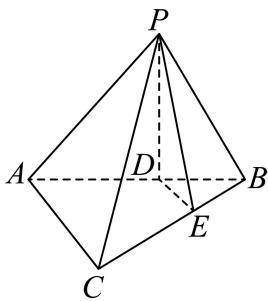

填空题
按本区原卷题号顺序排列。
青浦 · 第1题 ★☆☆☆☆ · 教师预估
在复平面内，复数 z=1+21i （其中 i是虚数单位）的共轭复数对应的点位于第 象限.
考点：共轭复数的坐标与象限。
难度依据：虚部反号即可判断
核查说明：题干与解析已用于人工归类，尚未完成整题公式校净与独立数学终审。
展开答案与解析
青浦 · 第2题 ★☆☆☆☆ · 教师预估
已知集合 A={x∣x=2k−1,k∈N},B={−1,0,1,2,3} ，则 A∩B=
考点：自然数生成集合与交集。
难度依据：枚举满足奇数表达式的元素
核查说明：题干与解析已用于人工归类，尚未完成整题公式校净与独立数学终审。
展开答案与解析
青浦 · 第3题 ★☆☆☆☆ · 教师预估
本题资料或解析有待核事项，预览不可作为已审定成品。
不等式 x+1x−3≥2的解集为
考点：分式不等式移项和端点取舍。
难度依据：通分后用符号表保留分母限制
核查说明：题干与解析已用于人工归类，尚未完成整题公式校净与独立数学终审。；题干右端出现“≥3 2”错识；同名PDF第1页文字层确认右端为2。
展开答案与解析
青浦 · 第4题 ★★☆☆☆ · 教师预估
已知直线 p1:x+(1+m)y+m−2=0 与直线l :mx+2y+8=0⋅ 平行，则m = .
考点：直线平行参数与重合排除。
难度依据：比例条件会给出重合直线需剔除
核查说明：题干与解析已用于人工归类，尚未完成整题公式校净与独立数学终审。
展开答案与解析
青浦 · 第5题 ★☆☆☆☆ · 教师预估
两条渐近线互相垂直的双曲线的离心率为
考点：等轴双曲线渐近线与离心率。
难度依据：垂直渐近线推出两半轴相等
核查说明：题干与解析已用于人工归类，尚未完成整题公式校净与独立数学终审。
展开答案与解析
青浦 · 第6题 ★★☆☆☆ · 教师预估
已知数列 {an} 满足 ⋅a1+2a2+3a3+⋅⋅⋅+nan=n(n+2) ，则 a66=
考点：加权前n项和的相邻作差。
难度依据：对加权和作差得到第n项
核查说明：题干与解析已用于人工归类，尚未完成整题公式校净与独立数学终审。
展开答案与解析
青浦 · 第7题 ★★☆☆☆ · 教师预估
#△ABCF 中，已知 ∠ACB=120∘,AB=27, ，若 BC=2AC ，则 △ABC 的面积为
考点：已知边比的余弦定理与面积。
难度依据：一条边设未知再用余弦定理求尺度
核查说明：题干与解析已用于人工归类，尚未完成整题公式校净与独立数学终审。
展开答案与解析
青浦 · 第8题 ★★☆☆☆ · 教师预估
已知圆柱M的底面半径为3，高为 3, ，圆锥N的底面直径和母线长相等. 若圆柱M 和圆锥N的体积相同，则圆锥N的底面半径为
考点：圆柱圆锥等体积与母线约束。
难度依据：由圆锥直径等母线先确定高半径比
核查说明：题干与解析已用于人工归类，尚未完成整题公式校净与独立数学终审。
展开答案与解析
青浦 · 第9题 ★★☆☆☆ · 教师预估
(x+y)(x−y)6 的展开式中， x4y3 项的系数为
考点：二项式展开乘一次式的系数合并。
难度依据：目标单项式可来自两项必须相加
核查说明：题干与解析已用于人工归类，尚未完成整题公式校净与独立数学终审。
展开答案与解析
青浦 · 第10题 ★★☆☆☆ · 教师预估
已知函数 y=f(x) 的定义域为{−2, −1, 1, 2}，值域为{−2, 2}，则满足条件的函数 y=f(x) 最多有个.
考点：有限集合上满射函数的计数；对应规则分类与排除常值函数。
难度依据：值域两个元素都须取得可用总数减两种常值
核查说明：题干与解析已用于人工归类，尚未完成整题公式校净与独立数学终审。
展开答案与解析
青浦 · 第11题 ★★★☆☆ · 教师预估
本题资料或解析有待核事项，预览不可作为已审定成品。
若函数 ⟨y=log21(ax2−8x+15) 在区间(1,2)上严格增，则实数a的取值范围
考点：复合对数函数单调与定义域；区间恒成立的参数范围及开端点。
难度依据：内层须同时严格递减与真数恒正
核查说明：题干与解析已用于人工归类，尚未完成整题公式校净与独立数学终审。；原解对数底数曾误写1/9但题干为1/2，需统一回核。
展开答案与解析
青浦 · 第12题 ★★★★☆ · 教师预估
本题资料或解析有待核事项，预览不可作为已审定成品。
已知A,B,C是单位圆上任意不同三点，则 ABAB⋅AC 的取值范围是
考点：数量积除模转化为有向投影；单位圆上三点的投影范围。
难度依据：利用圆上投影上下界且审查互异点下端点可达性
核查说明：仅修复所列OCR公式及其定界符错位；原解数学疑点和其他可渲染错识未因此消除。；原解析保留在源字段及精确补丁old中；本题针对性纠错已独立复核，不外推为全卷数学终审。；题干与解析已用于人工归类，尚未完成整题公式校净与独立数学终审。；原解取AB=2x后写0<x<1，漏了AB为直径时x=1情形；最终范围仍需补充该情形与端点不可达证明。
展开答案与解析
选择题
按本区原卷题号顺序排列。
青浦 · 第13题 ★★☆☆☆ · 教师预估
已知x, y∈R 且满足 x>y: ，则下列关系式恒成立的是（ ）.
A. x2+11<y2+11
B. ln(x2+1)>ln(y2+1)
C. sinx>siny
D. x3>y3
考点：基本函数全局单调性的反例辨析；实数序关系在函数映射下的保持。
难度依据：区分局部单调和全实数单调
核查说明：题干与解析已用于人工归类，尚未完成整题公式校净与独立数学终审。
展开答案与解析
青浦 · 第14题 ★☆☆☆☆ · 教师预估
若点 P(x,y,z)(xyz=0) 关于xOy的对称点为A，关于z轴的对称点为B，则A、B两点的对称是（ ）
A. 关 FXOz− 平面对称
B. 关于x轴对称
C. 关于y轴对称
D. 关于坐标原点对称
考点：空间坐标轴平面对称；空间点的坐标与中心对称。
难度依据：坐标变号两次比较即可
核查说明：题干与解析已用于人工归类，尚未完成整题公式校净与独立数学终审。
展开答案与解析
青浦 · 第15题 ★★☆☆☆ · 教师预估
本题资料或解析有待核事项，预览不可作为已审定成品。
已知函数 ⋅y=f(x) 是定义在R上的奇函数，且当 x>0♯f f(x)=(x−1)(x−3)+0.01 ， 则关于函数 ⋅y=f(x) 在R 上的零点的说法正确的是（ ）.
A. 有4个零点，其中只有一个零点在区间 (−3,−1) 上
B. 有4个零点，其中两个零点在区间(−3,−1)上，另外两个零点在区间(1,3)上
C. 有5个零点，两个正零点中一个在区间(0,1)上，一个在区间 (3,+∞) ⊥
D. 有5 个零点，都不在(0, 1)上
考点：奇函数零点对称与二次函数零点定位。
难度依据：不能漏原点零点且需判断正根区间
核查说明：题干与解析已用于人工归类，尚未完成整题公式校净与独立数学终审。；原解把正半轴表达式延伸到0并称f(0)=3.01，与奇函数f(0)=0冲突；该处应为正分支延拓值，不可直接照抄。
展开答案与解析
青浦 · 第16题 ★★★☆☆ · 教师预估
本题资料或解析有待核事项，预览不可作为已审定成品。
对于数列 {an}，设数列 {an} 的前 n 项和为 Sn，给出下列两个命题：
①存在函数 y=f(x)，使得 Sn=f(an)；
②存在函数 y=g(x)，使得 n=g(an)。
则①是②的（ ）。
A. 充分不必要条件
B. 必要不充分条件
C. 充要条件
D. 既不充分也不必要条件
考点：前缀和与通项的函数对应；函数单值性及一一对应；两个存在命题的充分必要性；数列映射条件的反例与蕴含。
难度依据：零数列给反例且要证明反向映射可定义
核查说明：题干与解析已用于人工归类，尚未完成整题公式校净与独立数学终审。；原解最后复合映射的书写不严谨，应从an互异保证Sn关于an可定义来证明。
展开答案与解析
解答题
按本区原卷题号顺序排列。
青浦 · 第17题 ★★★☆☆ · 教师预估
已知函数 f(x)=(2cos2x−1)sin2x+21cos4x
（Ⅰ）求f(x)的最小正周期及最大值；
（Ⅱ）若 iα∈(2π,π) ，且 f(α)=22 ，求α的值.
考点：（1）化为单一正弦求周期最大值；（2）限制相位范围后由最大值反求角。
难度依据：（1）化为单一正弦求周期最大值；（2）限制相位范围后由最大值反求角
核查说明：题干与解析已用于人工归类，尚未完成整题公式校净与独立数学终审。
展开答案与解析
青浦 · 第18题 ★★★☆☆ · 教师预估
本题资料或解析有待核事项，预览不可作为已审定成品。

如图，在三棱锥 P−ABC 中，平面 PAB⊥ 平面 ABC,AB=6,BC=23,AC=26,D. 、E分别为线段AB、BC上的点，且 AD=2DB,CE=2EB,PD⊥AC.
(1) (6分)求证： DE// 平面 PAC;
(2) (8分)求证： PD⊥ 平面 ABC
考点：（1）比例分点推出平行线；（2）算出底面垂线后结合面面垂直证明线面垂直。
难度依据：（1）比例分点推出平行线；（2）算出底面垂线后结合面面垂直证明线面垂直
核查说明：题干与解析已用于人工归类，尚未完成整题公式校净与独立数学终审。；解析CD²+AD²=AC²一行与前述CD=2√2、AD=4、AC=2√6实际一致；须保持数据，不把直角位置错移。
展开答案与解析
青浦 · 第19题 ★★★☆☆ · 教师预估
本题资料或解析有待核事项，预览不可作为已审定成品。
第七届中国国际进口博览会于 2024 年 11 月 5 日至 10 日在上海举办，某公司生产的 A、B 、C 三款产品在博览会上亮相，每一种产品均有普通装和精品装两种款式，该公司每天产量如下表: （单位:个）
|
产品A |
产品B |
产品C |
| 普通装 |
n |
180 |
400 |
| 精品装 |
300 |
420 |
600 |
现采用分层抽样的方法在某一天生产的产品中抽取 100 个，其中 B款产品有30个
(1) (4分)求 n的值；
(2) (4分)用分层抽样的方法在C款产品中抽取一个容量为5的样本，从样本中任取 2个产品，求其中至少有一个精品装产品的概率;
(3) (6分)对抽取到的 B款产品样本中某种指标进行统计，普通装产品的平均数为10，方差为2，精品装产品的平均数为12，方差为1.8，试估计这天生产的 B款产品的某种指标的总体方差 （精确到 0.01 ）.
考点：（1）按抽样比例反求产量；（2）分层样本中的至少一件概率；（3）组内方差与组间均值差加权合并。
难度依据：（1）按抽样比例反求产量；（2）分层样本中的至少一件概率；（3）组内方差与组间均值差加权合并
核查说明：题干与解析已用于人工归类，尚未完成整题公式校净与独立数学终审。；题干产量表在MD缺失；已定位同名PDF文字层：普通装A=n、B=180、C=400，精品装A=300、B=420、C=600，须恢复原表。
展开答案与解析
青浦 · 第20题 ★★★★☆ · 教师预估
本题资料或解析有待核事项，预览不可作为已审定成品。
已知椭圆 C:4x2+3y2=1,F 为椭圆 C的右焦点，过点F的直线 l交椭圆 C于A、B两点.

(1) (4分)若直线 l垂直于 x轴，求椭圆 C的弦AB的长度；
(2) (6分)设点P (−3, 0)，当 ∠PAB=90∘ 时，求点A的坐标；
(3) (8分)设点M (3, 0)，记 MA 、 MB的斜率分别为 ∣k1 和 k2 ，求 k1+k2 的取值范围.
考点：（1）竖直焦点弦长；（2）直角几何结合焦点定义求点；（3）韦达化斜率和再求范围。
难度依据：（1）竖直焦点弦长；（2）直角几何结合焦点定义求点；（3）韦达化斜率和再求范围
核查说明：题干与解析已用于人工归类，尚未完成整题公式校净与独立数学终审。；原解第1问把c=√(a²−b²)代入写成√(4²−3²)=1，且第3问联立系数有漏4，须校净复算。
展开答案与解析
青浦 · 第21题 ★★★★★ · 教师预估
本题资料或解析有待核事项，预览不可作为已审定成品。
已知函数 ⋅y=f(x) ，其中 f(x)=ex−1−2lnx+x
(1) (4分)求函 L¨∇y=f(x) 的单调区间；
(2) (6分)设函数 [g(x)=f(x)+2lnx ，问:函数 (y=g(x) 的图像上是否存在三点A,B,C，使得它们的横坐标成等差数列，且直线 AC的斜率等于 y=g(x) 在点B处的切线的斜率? 若存在，求出所有满足条件的点B的坐标;若不存在，说明理由;
(3) (8分)证明: 函数 ⋅y=f(x) 图像上任意一点都不落在函数 ⟨y=(x−2)3−3(x−2) 图像的下方
考点：（1）导函数单调确定极值；（2）等距三点差商与切线斜率矛盾；（3）分区间并多次构造导函数证明图像比较。
难度依据：（1）导函数单调确定极值；（2）等距三点差商与切线斜率矛盾；（3）分区间并多次构造导函数证明图像比较
核查说明：题干与解析已用于人工归类，尚未完成整题公式校净与独立数学终审。；原解第3问写“3(x−2)²≤1”于(1,3]不成立，后续估计实际用≤3；须修正并核查证明。
展开答案与解析